Nació el 5 de abril de 1856 en un pueblo de Cotobad, Pontevedra, Galicia, España. Sus padres fueron José
García y
María Meijón. Arribó a nuestro país en 1874 y comenzó a trabajar en una despensa de la ciudad de Junín, así como
también lo hizo en las ciudades de San Antonio de Areco y San Andrés de Giles. En 1882 se estableció en Lincoln y
creó su cadena de almacenes, llamada "El Sol de Mayo", la cual trasladó a las distintas localidades que fundó,
entre ellas Arenaza (1904), Martínez de Hoz (1904), Bermúdez (1909), El Triunfo (1909), Pasteur (1909) y Roberts
(1916).
Asimismo, fue uno de los socios fundadores de la Sociedad Española de Socorros Mutuos (1884), la
Biblioteca
Escolar Popular Pestalozzi (1889) y el Banco Popular de Lincoln (1903). Propietario de grandes extensiones de
campo, se interesó por el progreso de la región, y su gestión hizo posible la construcción de la línea
ferroviaria
de Los Toldos a Ingeniero Luiggi, que pasaba por varias localidades de Lincoln. También se dedicó a la compra y
venta de cereales en varias zonas del país, e incluso realizó experimentos con semillas que importaba desde
Europa, por lo que a su campo lo llamó "La Experimental".
Quebrado económicamente a causa de la sequía en 1911 y las inundaciones de 1912 a 1914, se instaló en
Pasteur,
donde pasó sus últimos años de vida. Enfermó gravemente y falleció en el Hospital Español a los 86 años en
Buenos
Aires, el 6 de agosto de 1942. Sus restos descansan en el Cementerio de Lincoln, en el Panteón de la Sociedad
Española de Socorros Mutuos.
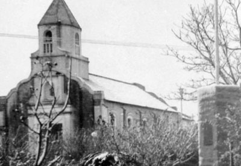
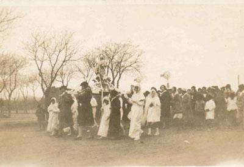
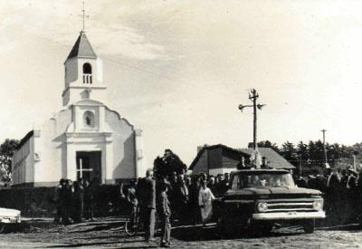
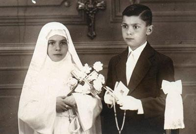
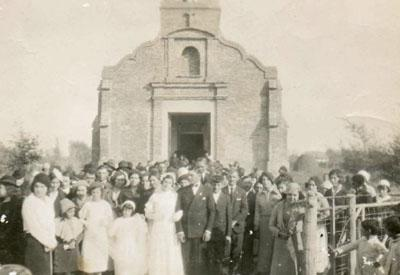
Parroquia Nuestra Señora del Carmen
La piedra fundamental data del 1 de septiembre de 1912 en el terreno donado por nuestro fundador, Manuel
Antonio
García Meijón. Anteriormente, las primeras misas se dieron en un antiguo cine.
Las primeras confirmaciones se concedieron en 1922 y los primeros bautismos en 1923.
La iglesia fue destruida poco tiempo después de haber sido construida por un fuerte viento. En 1930, se formó una
comisión para la “Restauración de la Iglesia Nuestra Señora del Carmen”. La inauguración del templo se realizó
el 14 de julio de 1932 y se le dio el nombre de “Nuestra Señora del Carmen”, estando a cargo de la parroquia de
Roberts. El 16 de julio del mismo año se otorgó la bendición de la obra de reconstrucción de la iglesia y la casa
parroquial.
En 1931, se celebraron las primeras fiestas patronales, dando inicio a una tradición que continuaría en los
años
posteriores. La primera boda se celebró en 1934.
El 13 de noviembre de 1965, el Padre Carlos Mullins se hizo cargo de la capilla y comenzó a residir en la casa
parroquial en Pasteur, aledaña al templo. En 1966 se otorgó la bendición al Monumento de la Madre. Durante este
año, se autorizó la utilización del guardapolvo escolar para las comuniones.
En 1976, se inició la construcción del polideportivo, que se encontraría en la parte trasera de la capilla.
En 1980, el curso de catecismo comenzó a dictarse con una duración de dos años de preparación. En 1983, se
construyó el salón parroquial, aledaño a la parroquia. Asimismo, el 1 de octubre de 1985 comenzó la ampliación del
templo. El 3 de mayo de 1985, obtuvo el rango de Cuasiparroquia y en 2004 fue anexada a Roberts por decreto
episcopal.
En 2000, se comenzó a utilizar la sala de catequesis y el 11 de abril de 2005 volvió a tener el rango de
capilla.
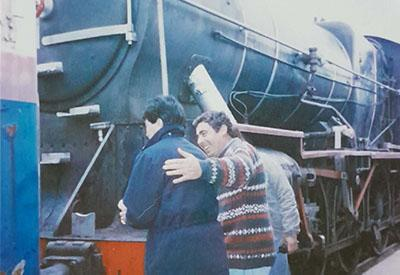
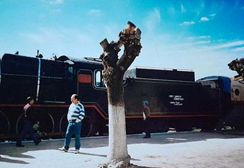
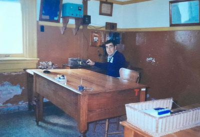
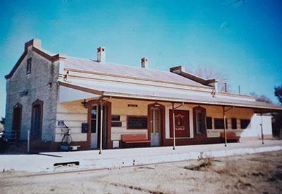
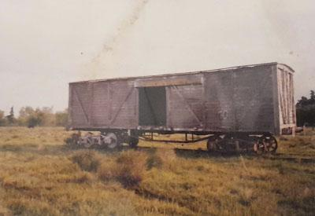
Estación de Ferrocarril de Pasteur
El Ferrocarril Oeste de Buenos Aires (FCO), inaugurado el 29 de agosto de 1857, fue el primero construido en
Argentina. Este mismo se renombró como Ferrocarril Domingo Faustino Sarmiento.
El terraplén del ferrocarril en Pasteur se levantó en 1909, pero el primer tren de pasajeros pasó el 15 de julio
de 1910. Fue Manuel Antonio García Meijón, quien gestionó la construcción de la línea ferroviaria desde Los Toldos
hacia
Ingeniero Luiggi.
La estación operaba diariamente, con trenes de pasajeros que viajaban desde Once a Pasteur de lunes a viernes
y de Once a Ingeniero Luiggi los martes y sábados por la tarde. El recorrido duraba aproximadamente 7 horas. Los
menores de 3 años pagaban medio boleto, mientras que los mayores pagaban el boleto completo.
Los trenes de carga, que transportaban ganado vacuno y porcino, cereales y lana ovina, operaban los lunes y
sábados hacia la Estación Mecha (cercana a Bragado). Generalmente, el ganado iba al matadero y la lana se vendía
en el mercado de Avellaneda.
Se trabajaba en dos turnos de ocho horas: uno comenzaba a las 4:00 a.m. y el otro a las 4:00 p.m. El trabajo
incluía atención al público, limpieza de la estación, movimientos en la playa y control de señales. El equipo
estaba formado por un jefe de estación y dos auxiliares, quienes ejecutaban las órdenes y podían ser transferidos
a otras estaciones cercanas.
Los pasajeros habituales eran pobladores locales que viajaban a diversos destinos. También había un comisionista
que viajaba regularmente desde Once a Pasteur y viceversa. Las encomiendas, como aves de corral y conejos, se
despachaban en coches particulares para encomiendas.
La comunicación con el resto de las estaciones se realizaba mediante telégrafo o por medio de un teléfono interno.
En caso de emergencia, se usaba la unión telefónica o se daba aviso al maquinista para que procediera con
precaución si no había comunicación con la siguiente estación.
La actividad de la estación comenzó a declinar con las privatizaciones durante el gobierno de Menem. A partir
de entonces, el tren dejó de operar rutinariamente y solo era solicitado por estaciones vecinas. El último
empleado fue despedido el 28 de febrero de 2002.
La estación ya no presta servicios de pasajeros y sus vías, concesionadas a Ferroexpreso Pampeano, están
inactivas y en estado de abandono. La estación se encuentra a 376,5 km de la Estación Once. Aunque ya no se usa
para el transporte ferroviario, las instalaciones se han adaptado para albergar diversos talleres y actividades,
así como una Biblioteca y Museo Municipal.
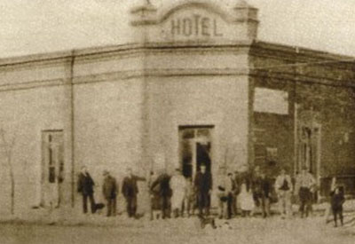
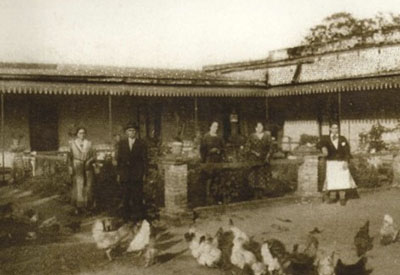
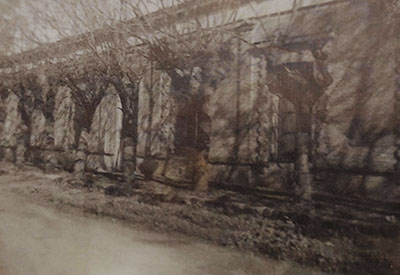
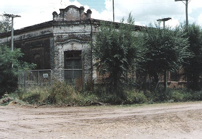
La Piamontesa
La Piamontesa de Alais y Gagliardi fue un hotel y restaurante fundado en 1908, el cual se convirtió en el
refugio perfecto para nuestro fundador, Manuel Antonio García Meijón, durante sus visitas a la localidad.
Durante sus años de funcionamiento, este establecimiento recibió a innumerables huéspedes que disfrutaron de
sus cómodas habitaciones y su elegante comedor. La Piamontesa era famosa por la calidad y variedad de sus comidas
italianas y los mejores vinos y bebidas alcohólicas importadas.
Entre sus huéspedes destacados estuvieron el Dr. Abatte y el Dr. Raúl Alberto Cabaleiro. También, actores y
actrices como Norman Brisky, Perla Santalla, Eva Franco y los hermanos Aída y Jorge Luz se hospedaron aquí durante
el rodaje de la película "Juguemos en el Mundo" dirigida por María Herminia Avellaneda.
El 22 de marzo de 1980, a las 9 horas, comenzó el remate de la colección de bebidas añejas, elementos,
utilidades, muebles, vajillas y antigüedades que formaban parte del aclamado hotel. Posteriormente, el edificio
fue derrumbado y, en la actualidad, el terreno se encuentra baldío.
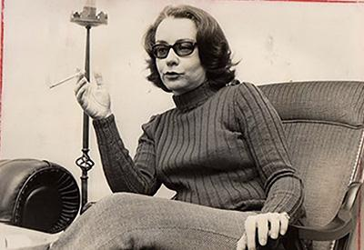
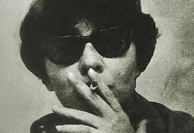
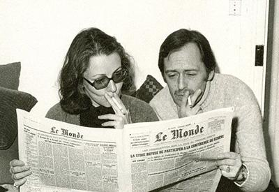
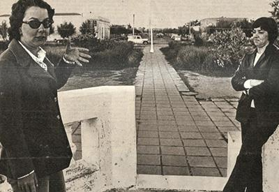
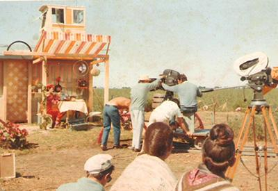
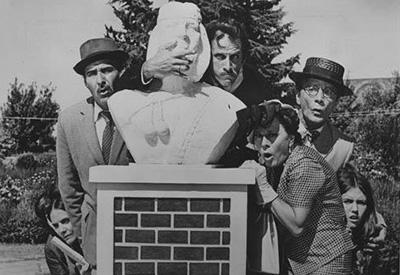
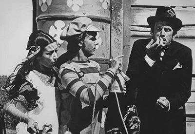
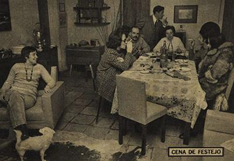
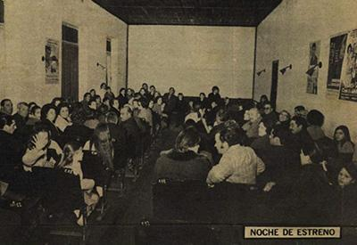
María Herminia Avellaneda (1933-1997)
Nació el 3 de noviembre de 1933 en Pasteur, Lincoln, Buenos Aires. Fue una destacada cineasta y productora
argentina, reconocida por su contribución al cine y la televisión del país.
Comenzó su carrera en la televisión a los 22 años y dedicó más de cuatro décadas a dignificar este medio,
convirtiéndose en una pionera del género. En 1984, se convirtió en la directora artística de ATC (Argentina
Televisora Color), dejando una huella significativa en la industria con su enfoque feminista y su pasión por la
calidad artística. Avellaneda también fue conocida por su capacidad para contar historias y su espíritu generoso,
tanto en su vida personal como profesional.
En 1971, filmó su primer largometraje, "Juguemos en el mundo", basado en un guión de María Elena Walsh. En
1980, realizó su segundo film, "Rosa de lejos", protagonizado por Leonor Benedetto (versión fílmica de una exitosa
telenovela).
Entre sus logros, destaca su esfuerzo por promover la libertad, la solidaridad y la dignificación de la mujer a
través de su trabajo. En 1981, recibió el Diploma al Mérito de los Premios Konex como una de las cinco mejores
directoras de televisión de Argentina.
Falleció víctima de un cáncer a los 63 años el 7 de julio de 1997 en Buenos Aires.
Juguemos en el mundo (1971)
"Juguemos en el mundo" es un film argentino de 1971 dirigido por María Herminia Avellaneda y escrito por
María Elena Walsh. La película, una comedia de 1 hora y 45 minutos, narra las aventuras de Doña Disparate y
Bambuco, quienes, cansados de la vida en la ciudad, huyen en su coche destartalado y llegan por casualidad a un
pueblito de La Pampa. Allí, revolucionan la aldea, asumen el gobierno temporalmente y luego se marchan. La
película mezcla fantasía ingenua con sátira política.
Fue rodada casi en su totalidad en Pasteur, incluso muchos de los pobladores participaron del rodaje,
conviviendo con varios artistas nacionales como Virgina Lago, Norman Briski, Jorge y Aída Luz, Hugo Caprera y Eva
Franco.
 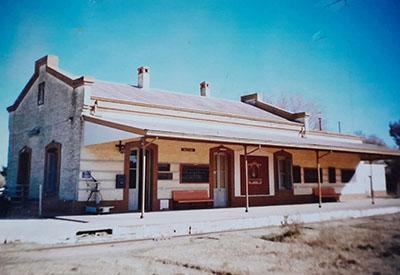
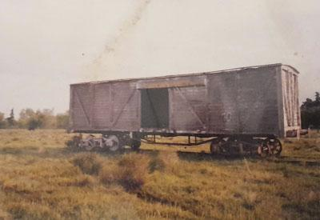
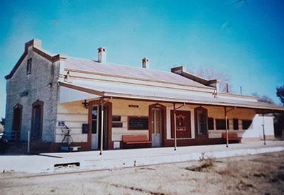
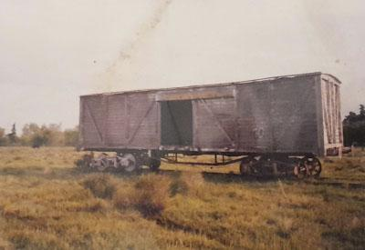